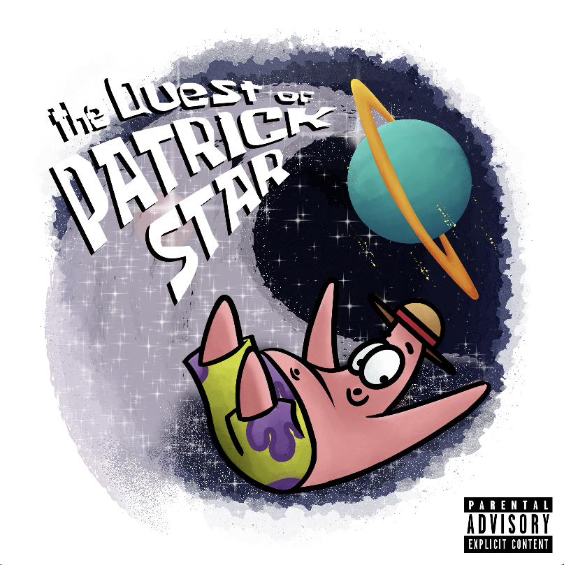

Unreal Engine, DaVinci Resolve

Clip Studio Paint, Photoshop/Photopea

Photoshop/Photopea
Unreal Engine, DaVinci Resolve

Photoshop/Photopea
JavaScript (p5.js), Photoshop/Photopea
After Effects, Premiere Pro
Unity, Photoshop
Unity, Clip Studio Paint, Photoshop/Photopea
JavaScript (p5.js), Photoshop/Photopea
After Effects, Premiere Pro
After Effects, DaVinci Resolve
DaVinci Resolve, Blender
HTML, CSS, JavaScript